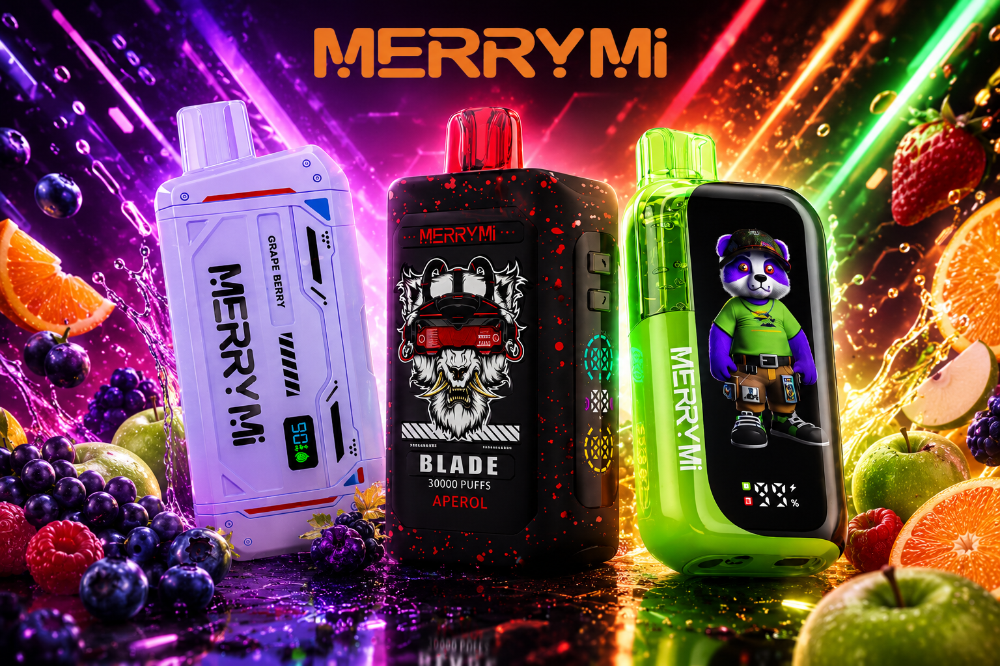

Ranking Polska 2026
Najpopularniejsza jednorazówka MerryMi w Polsce
Na podstawie zainteresowania użytkowników i wyborów zakupowych, najczęściej wybierana jednorazówka MerryMi w Polsce to model Panda Twins 40K. Poniżej znajdziesz pełne porównanie i najlepsze alternatywy.

1. Najpopularniejsza jednorazówka MerryMi w Polsce
Obecnie najpopularniejsza jednorazówka MerryMi na polskim rynku to MerryMi Panda Twins 40K. Ten e papieros jest często wybierany przez użytkowników, którzy szukają wysokiej wydajności i szerokiej gamy smaków.
W kategorii e papierosy jednorazowe model Panda Twins 40K wyróżnia się dużą liczbą Buchów, wygodnym formatem oraz stabilnym profilem smakowym przy codziennym użyciu.
2. Dlaczego Panda Twins 40K wygrywa w Polsce
Najczęściej wskazywane powody wyboru tej jednorazówki to długi czas działania, wyraziste smaki i prosta obsługa. Dla wielu osób to najlepszy e papieros na start w segmencie premium.
- Duża wydajność: do 40 000 Buchów w jednym urządzeniu.
- Wygoda: jednorazówka gotowa do użycia bez konfiguracji.
- Smaki: szeroki wybór duetów smakowych w jednej serii.
3. Top alternatywy MerryMi dla Panda Twins 40K
Jeśli szukasz podobnego poziomu jakości, warto porównać też inne jednorazówki MerryMi:
- MerryMi Blade 30K - mocna i stabilna jednorazówka do intensywnego użytkowania.
- MerryMi Mecha Pro 35K - e papieros z wysoką wydajnością i mocnym profilem smakowym.
- MerryMi Mecha X 36K - popularny wybór dla osób ceniących balans mocy i wygody.
- MerryMi WiFlux 24K - model do codziennego używania w segmencie e papierosy jednorazowe.
4. Najczęściej wybierane smaki w Polsce
Wśród polskich użytkowników najczęściej powtarzają się profile owocowe i chłodzące. Dotyczy to zarówno modelu Panda Twins 40K, jak i innych serii MerryMi.
- Blue Razz Ice
- Watermelon Ice
- Kiwi Passion Fruit Guava
- Grape Ice
Pełną listę modeli i smaków znajdziesz tutaj: katalog produktów MerryMi. Jeśli interesuje Cię segment liquidów, przejdź do MerryMi Salts 30 ml.
5. FAQ zakupowe
Która jednorazówka MerryMi jest obecnie najpopularniejsza w Polsce?
Najczęściej wybierana jest MerryMi Panda Twins 40K ze względu na dużą wydajność i szeroki wybór smaków.
Jaki e papieros MerryMi wybrać jako alternatywę?
Najczęściej porównywane alternatywy to Blade 30K oraz Mecha Pro 35K.
Czy e papierosy jednorazowe są legalne dla każdego?
Produkty nikotynowe są przeznaczone wyłącznie dla osób pełnoletnich. Zakup i użytkowanie powinny być zgodne z lokalnymi przepisami.
Kiedy wybrać olejki do e papierosa zamiast jednorazówki?
Jeśli planujesz regularne, długoterminowe użytkowanie i chcesz samodzielnie dobierać liquid, lepsze mogą być olejki do e papierosa oraz urządzenie typu pod.
Przejdź do produktów
Sprawdź aktualną ofertę i porównaj modele MerryMi.